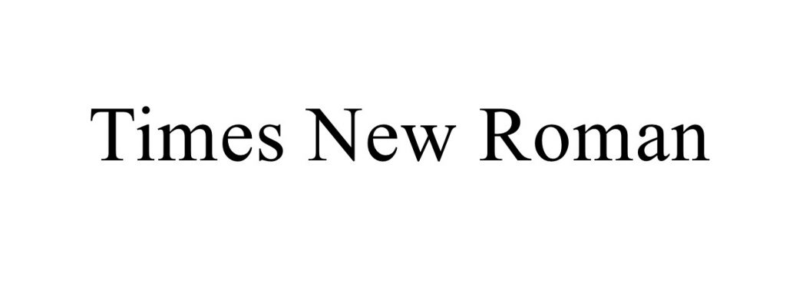
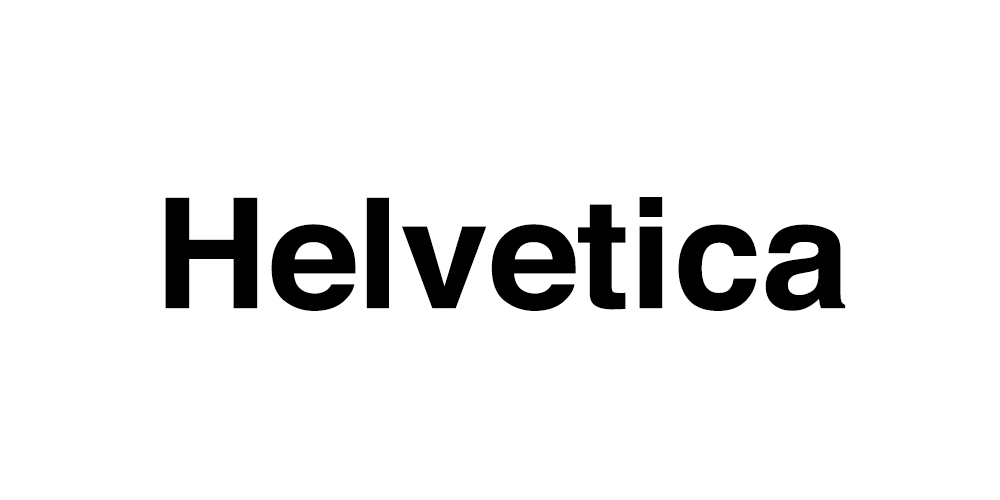
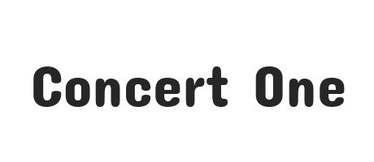
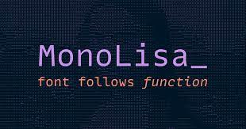

You are living in the matrix.
We may think that that the actions we undertake in our lives are truly
out of our free will, but in reality, our lives and our actions have
already been heavily influenced by those who lived and died thousands of
years ago in the past.
The above mentioned reality often comes across,
in the simple action of ’Typing’. Ever wondered why whenever you go and
look for fonts for your application, there often four broad categories:
Serif fonts, Sans serif fonts, Script fonts, Display fonts. How they
came about is interesting to look at:
-
Serif Font: When it comes to the Latin alphabets, the
Serif is the oldest types of fonts. Serif fonts are characterised by
tiny ‘feet’ sticking out at the end of the letters. They look the way
they do as they were inspired by the marble carvings made during the
Roman Empire. The reason why they had the serifs (feet) at the end of
the central beams of the alphabets is once a person’s chistle has gone
into the rock, and he /she needs to exit the engraving, it actually
wasn’t possible until the person rotated the chistle out of the rock.
The stone carver of the Roman times unavoidably created them, while
following the outlines of the letters. Because of its origin, Serif
typefaces are associated with old, traditional, serious, and
authoritative. Examples include: Minion Pro, Times New Roman.

-
Sans Serif font-
Or quite simply, without the serif (feet). The central beams of Sans
serif end in straight right angles. Sans Serif fonts are modern fonts
which first appeared in the 19th century. They are sleek and clean
looking texts, which make them friendlier and approachable,
contemporary. Sensible, simple, straightforward are the qualities
associated with them. Examples include: Helvetica, Avenir.

-
Script Fonts:
These fonts resemble handwritings. As they are very flowy and ornate ,
they have limited use in day to day web design and are reserved for
special occasions like designing headings and titles invitation cards,
restaurants , liquor bottles, logo branding etc. Examples include:
Freestyle script, Broadley.
-
Display fonts:
Display fonts or decorative fonts are the most diverse collection of
fonts. These are just meant to add aesthetic value to your designs.
Examples include: Concert one.

-
Monospace fonts:
Ever wondered the font you use to type code in VScode? They are
Monospace fonts, which are a characterized by the letters having
constant width, giving the text an appearance of a manual typewriter.
Examples include: Monolisa, Apercu Mono.

Roshan Nair
28 September,2021